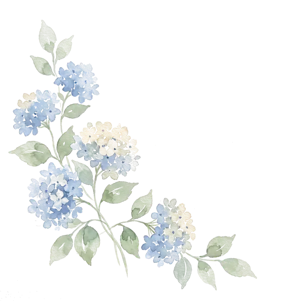

20 · 03 · 2027
The Westin Sanya Haitang Bay
Setting the tables…
0%

The Big Day · a walkthrough
Saturday 20 · 03 · 2027
The Westin Sanya Haitang Bay
隱逸居 · The Serene Retreat
Walk our wedding day — before anyone else does.
Modelled from our own site photos and the suite walkthrough. Not to survey accuracy.
That was our wedding day
Saturday 20 · 03 · 2027
See you in Haitang Bay.
Getting around
Six moments across three days — 18 to 20 March 2027. Nothing here is to survey accuracy; it is how the day will feel.